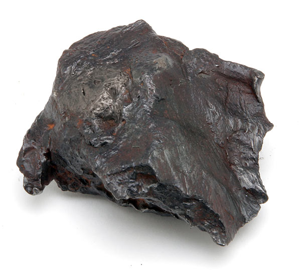
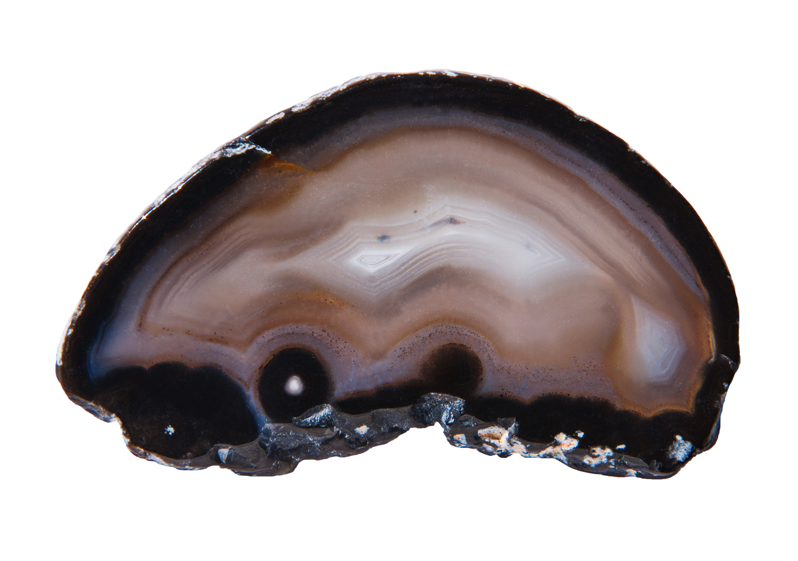

Black Crystals in Nature: Varieties, Properties, and Uses
The world of crystals is a vast and captivating realm, with crystals of different colors, shapes, and energies. Within this dazzling array, black crystals stand out with their unique allure and profound symbolism.
Black crystals are not just any type of crystal, they are a fascinating subset of the mineral kingdom, distinguished by their dark, often opaque, appearance. This deep coloration arises from various factors, including the presence of specific minerals, impurities, or unique structural arrangements within the crystal lattice. While black may seem like an absence of color, it is, in fact, a powerful and evocative hue that resonates with depth, mystery, and the unknown.
In this article, we will take a very detailed look at some of the most common black crystals, their properties, uses, value, etc. Let's take the dive and start with the basics.
The Significance and Allure of Black Crystals
Black crystals have held a place of reverence in numerous cultures and spiritual practices throughout history. Their association with the night sky, the fertile earth, and the hidden depths of the subconscious has imbued them with a sense of power and mystique. In many traditions, black crystals are seen as protective talismans, shielding the wearer from negative energies and promoting grounding and stability.
Black crystals are also revered for their ability to facilitate transformation and change. They are believed to assist in releasing old patterns and embracing new beginnings, making them valuable companions during periods of personal growth and evolution. Their connection to the earth's energy is thought to promote a sense of rootedness and connection to the natural world, fostering a sense of calm and inner peace.
Black Crystals Through History
The use of black crystals dates back to ancient civilizations, where they were prized for their beauty, protective qualities, and spiritual significance.
- Ancient Egypt: Black onyx was highly valued in ancient Egypt, where it was used to create amulets, jewelry, and decorative objects. The Egyptians believed that black onyx could ward off evil spirits and bring good fortune.
- Ancient Greece: The Greeks associated black obsidian with the god Hades, ruler of the underworld. Obsidian was used for scrying and divination, as it was believed to provide a window into the hidden realms.
- Native American Cultures: Many Native American tribes utilized black tourmaline for protection and healing. It was believed to dispel negative energy and promote physical and emotional well-being.
- Medieval Europe: During the Middle Ages, black jet was a popular material for mourning jewelry and religious artifacts. It was believed to absorb negative emotions and provide comfort during times of grief.
The historical significance of black crystals underscores their enduring appeal and their profound impact on human culture and spirituality.
General Properties of Black Crystals
Black crystals share certain general properties, both physical and metaphysical, that contribute to their unique allure and power.
Physical Properties
- Color: Black crystals are characterized by their dark, often opaque, appearance.
- Luster: The luster of black crystals can vary, ranging from vitreous (glassy) to resinous to metallic.
- Hardness: The hardness of black crystals varies depending on the specific mineral. Some, like obsidian, are relatively soft, while others, like black diamonds, are exceptionally hard.
- Crystal System: Black crystals can form in various crystal systems, including cubic, hexagonal, and orthorhombic.
Metaphysical Properties
- Grounding and Protection: Many black crystals are believed to help ground and protect the wearer from negative energies.
- Transformation and Change: Black crystals can also symbolize transformation and change, aiding in personal growth and overcoming challenges.
- Inner Strength and Courage: Some black crystals are associated with enhancing inner strength and courage.
- Purification and Detoxification: Certain black crystals are believed to have purifying and detoxifying properties, helping to cleanse the body and mind of negative energies.
- Connection to the Earth: Black crystals are often associated with the Earth's energy, promoting a sense of rootedness and connection to the natural world.
Scientific Properties
- Electromagnetic Shielding: Some black crystals, like black tourmaline and shungite, are believed to have electromagnetic shielding properties, protecting against EMF radiation.
- Water Purification: Shungite is believed to have water purification properties, removing impurities and toxins from water.
- Pain Relief: Certain black crystals, like hematite, are believed to have pain-relieving properties, helping to alleviate discomfort and promote healing.
20 Most Common Black Crystals & their Uses
| Crystal Name | Uses | Locations Found | Value |
|---|---|---|---|
| Obsidian | Meditation, healing, protection, jewelry | Mexico, Iceland, Japan | Affordable, rare types more valuable |
| Black Tourmaline | Protection, emotional stability, jewelry, home décor | Brazil, Africa, United States | Moderately priced |
| Onyx | Strength, endurance, jewelry, amulets | Brazil, India, United States | Affordable, varies by quality |
| Jet | Protection, grounding, mourning jewelry | England, Spain, United States | Varies, antique pieces collectible |
| Hematite | Grounding, focus, jewelry, industrial uses | Brazil, South Africa, Canada | Affordable, some pieces more valuable |
| Shungite | Protection, water purification, jewelry | Russia (Karelia region) | Varies, Elite Shungite more expensive |
| Smoky Quartz | Grounding, calming, jewelry, healing | Brazil, United States, Switzerland | Moderately priced, darker pieces more valuable |
| Hypersthene | Protection, grounding, meditation | United States, Canada, Norway | Relatively affordable |
| Black Diamond | Strength, courage, luxury jewelry | Brazil, Central Africa, Australia | Extremely valuable |
| Black Sapphire | Protection, grounding, spiritual insight, jewelry | Australia, Thailand, Sri Lanka | Highly valued |
| Black Garnet | Strength, protection, jewelry, talismans | Italy, Madagascar, United States | Moderately priced |
| Black Spinel | Protection, grounding, high-end jewelry | Myanmar, Thailand, Sri Lanka | High-value, depends on size and cut |
| Black Pearl | Wisdom, protection, fine jewelry | Tahiti, French Polynesia | Highly valued, varies by luster and size |
| Black Jasper | Grounding, stability, jewelry, carvings | United States, India, Russia | Generally affordable |
| Black Agate | Grounding, protection, jewelry, amulets | Brazil, India, United States | Affordable, varies by quality |
| Black Moonstone | Protection, emotional balance, jewelry, meditation | Madagascar, India | Moderately priced |
| Nuummite | Intuition, protection, meditation, amulets | Greenland, Canada | Moderately to highly valued |
| Black Kyanite | Grounding, healing, energy work, meditation | Brazil, India, United States | Affordable, varies by size and quality |
| Apache Tears | Protection, healing, overcoming grief | United States (Arizona, New Mexico) | Affordable, varies by size and quality |
| Black Coral | Protection, inner strength, jewelry | Hawaii, Caribbean | Highly valued, varies by size and origin |
1. Obsidian

Meaning & Properties: Known as the "stone of truth," obsidian is believed to reveal hidden truths and enhance personal growth.
Identification: Typically black with a glassy luster, obsidian can be found in various forms, including Snowflake Obsidian, which has white inclusions.
Uses: Used in meditation, healing, and protection. It's also popular in jewelry and decorative objects.
Care & Cleansing: Cleanse with running water and recharge under the moonlight.
Origin & Sourcing: Formed from volcanic lava, primarily sourced from regions with volcanic activity like Mexico and Iceland.
Value: Generally affordable, but rare types like Rainbow Obsidian can be more valuable.
2. Black Tourmaline
 >
>
Meaning & Properties: A powerful protective stone, black tourmaline is known for its ability to absorb negative energy and promote emotional stability.
Identification: Jet-black, often striated, and with a glassy to matte finish.
Uses: Worn as jewelry, used in energy healing, and placed in homes for protection.
Care & Cleansing: Cleanse regularly with water and recharge in sunlight.
Origin & Sourcing: Found in Brazil, Africa, and the United States.
Value: Widely available and moderately priced.
3. Onyx
Meaning & Properties: Onyx is believed to provide strength, endurance, and support during difficult times.
Identification: Smooth, black, often with bands of white or gray.
Uses: Common in jewelry, carvings, and protective amulets.
Care & Cleansing: Cleanse with water and recharge under the sun.
Origin & Sourcing: Sourced from Brazil, India, and the United States.
Value: Affordable, with price varying based on quality and color banding.
4. Jet
Meaning & Properties: Jet is considered a stone of protection and grounding, often used in mourning jewelry.
Identification: Lightweight, black, with a soft texture that can be polished to a high shine.
Uses: Used in jewelry, particularly during the Victorian era, and in energy work for protection.
Care & Cleansing: Handle gently, cleanse with a soft cloth, and recharge in sunlight.
Origin & Sourcing: Formed from fossilized wood, commonly found in England and Spain.
Value: Varies, with antique jet pieces being highly collectible.
5. Hematite
Meaning & Properties: Hematite is known for its grounding and balancing properties, often used to enhance focus and concentration.
Identification: Metallic black or gray with a shiny luster.
Uses: Popular in jewelry, meditation, and as a grounding stone.
Care & Cleansing: Cleanse with a soft cloth, avoid water as it can rust, and recharge in sunlight.
Origin & Sourcing: Found in Brazil, South Africa, and Canada.
Value: Generally affordable, with larger or uniquely shaped pieces being more valuable.
6. Shungite
Meaning & Properties: Shungite is known for its ability to purify and protect against electromagnetic radiation.
Identification: Black, with a matte or shiny finish, sometimes containing visible inclusions.
Uses: Used in water purification, jewelry, and as a protective stone.
Care & Cleansing: Cleanse with water and recharge in sunlight.
Origin & Sourcing: Primarily found in Russia, specifically in the Karelia region.
Value: Prices vary, with Elite Shungite being more expensive due to its higher carbon content.
7. Smoky Quartz
Meaning & Properties: A grounding and calming stone, smoky quartz is believed to dispel fear and negativity.
Identification: Ranges from light gray to deep black, often transparent with a smoky appearance.
Uses: Used in jewelry, meditation, and energy healing.
Care & Cleansing: Cleanse with running water and recharge in sunlight.
Origin & Sourcing: Found in Brazil, the United States, and Switzerland.
Value: Moderately priced, with darker, transparent pieces being more valuable.
8. Hypersthene
Meaning & Properties: Known for its protective and grounding properties, hypersthene is said to enhance clarity and inner strength.
Identification: Dark brown to black with a metallic sheen, often with a silky luster.
Uses: Used in meditation and as a grounding stone.
Care & Cleansing: Cleanse with a soft cloth and recharge in sunlight.
Origin & Sourcing: Found in the United States, Canada, and Norway.
Value: Relatively affordable, with price depending on size and quality.
9. Black Diamond
Meaning & Properties: Symbolizes strength, power, and protection, black diamonds are often associated with courage and inner strength.
Identification: Black, opaque, and with a crystalline structure similar to clear diamonds.
Uses: Highly prized in jewelry, especially in engagement rings and luxury items.
Care & Cleansing: Cleanse with warm water and mild soap, recharge in sunlight.
Origin & Sourcing: Found in Brazil, Central Africa, and Australia.
Value: Extremely valuable, with prices varying based on size, cut, and clarity.
10. Black Sapphire
Meaning & Properties: Known for protection, grounding, and insight, black sapphire is often used to enhance spiritual vision.
Identification: Deep black, sometimes with hints of blue or gray, exhibiting a star-like pattern when cut en cabochon.
Uses: Popular in jewelry, particularly in rings and pendants.
Care & Cleansing: Cleanse with warm water and soap, and recharge under the moonlight.
Origin & Sourcing: Sourced from Australia, Thailand, and Sri Lanka.
Value: Highly valued, with price depending on size, cut, and origin.
11. Black Garnet (Melanite)
Meaning & Properties: Associated with strength and protection, black garnet is believed to bring stability and courage.
Identification: Black with a vitreous luster, often found in dodecahedral crystals.
Uses: Used in jewelry and as a protective talisman.
Care & Cleansing: Cleanse with water and recharge in sunlight.
Origin & Sourcing: Found in Italy, Madagascar, and the United States.
Value: Moderately priced, with value depending on clarity and size.
12. Black Spinel
Meaning & Properties: Black spinel is known for its protective and grounding properties, often used to repel negative energy.
Identification: Jet-black with a vitreous luster, often found in octahedral crystals.
Uses: Popular in high-end jewelry and as a protective stone.
Care & Cleansing: Cleanse with warm water and soap, and recharge in sunlight.
Origin & Sourcing: Sourced from Myanmar, Thailand, and Sri Lanka.
Value: Valued similarly to other high-quality gemstones, with price depending on size and cut.
13. Black Pearl
Meaning & Properties: Black pearls symbolize wisdom, protection, and transformation.
Identification: Iridescent black, often with overtones of green, blue, or purple.
Uses: Primarily used in fine jewelry, especially necklaces and earrings.
Care & Cleansing: Wipe with a soft cloth, avoid harsh chemicals, and recharge in the moonlight.
Origin & Sourcing: Found in the South Pacific, particularly Tahiti and French Polynesia.
Value: Highly valued, with price varying based on size, luster, and origin.
14. Black Jasper
Meaning & Properties: Black jasper is a protective stone, often used for grounding and stability.
Identification: Opaque black with a smooth, matte finish.
Uses: Used in jewelry, carvings, and as a grounding stone in meditation.
Care & Cleansing: Cleanse with water and recharge in sunlight.
Origin & Sourcing: Found in the United States, India, and Russia.
Value: Generally affordable, with larger pieces or unique patterns being more valuable.
15. Black Agate
Meaning & Properties: Black agate is known for its grounding and protective properties, often used to bring balance and stability.
Identification: Opaque black with a smooth, often banded appearance.
Uses: Used in jewelry, amulets, and as a grounding stone.
Care & Cleansing: Cleanse with water and recharge in sunlight.
Origin & Sourcing: Sourced from Brazil, India, and the United States.
Value: Affordable, with price varying based on quality and banding.
16. Black Moonstone
Meaning & Properties: Known for its protective and nurturing properties, black moonstone is believed to enhance intuition and emotional balance.
Identification: Black with a subtle shimmer, often exhibiting a sheen or adularescence.
Uses: Popular in jewelry, meditation, and as a protective stone.
Care & Cleansing: Cleanse with water, avoid prolonged sunlight exposure, and recharge under the moonlight.
Origin & Sourcing: Found in Madagascar and India.
Value: Moderately priced, with value depending on size and quality.
17. Nuummite
Meaning & Properties: Known as the "sorcerer's stone," Nuummite is believed to enhance intuition and protect against negative energy.
Identification: Dark black with iridescent flashes of gold or blue.
Uses: Used in meditation, energy work, and as a protective amulet.
Care & Cleansing: Cleanse with water, and recharge in moonlight.
Origin & Sourcing: Found in Greenland and Canada.
Value: Moderately to highly valued, especially for high-quality specimens.
18. Black Kyanite
Meaning & Properties: Black kyanite is known for its grounding and healing properties, often used to clear blockages in the energy field.
Identification: Black with a fibrous, fan-like structure.
Uses: Used in energy healing, meditation, and as a protective stone.
Care & Cleansing: Cleanse with water, and recharge in sunlight.
Origin & Sourcing: Found in Brazil, India, and the United States.
Value: Generally affordable, with prices varying based on size and quality.
19. Apache Tears
Meaning & Properties: Apache Tears are a type of obsidian known for their protective and healing properties, often used to overcome grief.
Identification: Small, rounded, black to brownish-black, with a glassy texture.
Uses: Used in healing, meditation, and as a protective stone.
Care & Cleansing: Cleanse with water, and recharge under the moonlight.
Origin & Sourcing: Found in the United States, particularly in Arizona and New Mexico.
Value: Affordable, with price depending on size and quality.
20. Black Coral
Meaning & Properties: Black coral is believed to offer protection and enhance inner strength, often associated with the ocean's energy.
Identification: Black, with a smooth, matte, or shiny finish, often found in branching structures.
Uses: Used in jewelry, especially in coastal cultures.
Care & Cleansing: Cleanse with water, avoid chemicals, and recharge in the moonlight.
Origin & Sourcing: Found in deep ocean waters, particularly around Hawaii and the Caribbean.
Value: Highly valued, with price varying based on size and origin.
RELATED TOPIC: Silver Treasures: Exploring Silver Rocks, Minerals, Gems, and Crystals
Other Noteworthy Black Crystals
1. Black Zircon
Meaning & Properties: Known for its grounding and protective properties, black zircon is believed to enhance spiritual insight.
Identification: Black with a vitreous luster, often found in a variety of cuts.
Uses: Used in jewelry, particularly rings and pendants.
Care & Cleansing: Cleanse with water and mild soap, and recharge in sunlight.
Origin & Sourcing: Found in Sri Lanka, Australia, and Africa.
Value: Valued similarly to other gemstones, with price depending on size and cut.
2. Black Opal
Meaning & Properties: Black opal is believed to offer protection and emotional balance, often associated with intuition and psychic abilities.
Identification: Black with vibrant flashes of color, often iridescent.
Uses: Highly prized in jewelry, especially in rings and pendants.
Care & Cleansing: Cleanse with water, avoid chemicals, and recharge in moonlight.
Origin & Sourcing: Primarily found in Australia, particularly in Lightning Ridge.
Value: Extremely valuable, with price depending on color play, size, and origin.
3. Black Beryl
Meaning & Properties: Black beryl, also known as “Schorl,” is known for its protective and grounding properties, often used to repel negative energy.
Identification: Black, with a vitreous to resinous luster.
Uses: Used in jewelry and as a protective stone.
Care & Cleansing: Cleanse with water, and recharge in sunlight.
Origin & Sourcing: Found in Brazil, Pakistan, and Russia.
Value: Moderately priced, with value depending on size and clarity.
4. Black Obsidian Mirror
Meaning & Properties: Black obsidian mirrors have been used for centuries for scrying and divination. They are believed to provide a window into the subconscious and access hidden knowledge.
Identification: Black obsidian mirrors are typically polished obsidian with a smooth, reflective surface.
Uses: Black obsidian mirrors are used in scrying, divination, and shadow work practices. They are also used for meditation and self-reflection.
Care & Cleansing: Black obsidian mirrors can be cleansed with running water or by smudging with sage. It is important to handle them with care to avoid scratching the surface.
Origin & Sourcing: Black obsidian mirrors are crafted from obsidian sourced from volcanic regions worldwide.
Value: The value of black obsidian mirrors varies depending on the size, quality of the polish, and any additional artistic features.
5. Black Calcite
Meaning & Properties: Black calcite is a variety of calcite with a dark color. It is associated with grounding, protection, and purification.
Identification: Black calcite is typically a deep black color with a vitreous to earthy luster. It may also exhibit banding or veining.
Uses: Black calcite is used in jewelry, amulets, and meditation practices. It is also used to cleanse and purify spaces.
Care & Cleansing: Black calcite can be cleansed with running water or by smudging with sage. It is important to avoid harsh chemicals or abrasive cleaners as calcite is a relatively soft mineral.
Origin & Sourcing: Black calcite is found in various locations worldwide, including Mexico, the United States, and China.
Value: The value of black calcite varies depending on the quality and size of the crystal.
6. Black Fluorite
Meaning & Properties: Black fluorite is a variety of fluorite with a dark color. It is associated with focus, concentration, and mental clarity.
Identification: Black fluorite is typically a deep black color with a glassy luster. It often forms in cubic or octahedral crystals.
Uses: Black fluorite is used in jewelry, amulets, and meditation practices. It is also used to enhance focus and concentration.
Care & Cleansing: Black fluorite can be cleansed with running water or by smudging with sage.
Origin & Sourcing: Black fluorite is found in various locations worldwide, including China, Mexico, and the United States.
Value: The value of black fluorite varies depending on the quality and size of the crystal.
7. Black Aventurine
Meaning & Properties: Black aventurine is a variety of aventurine with a dark background and sparkling inclusions. It is associated with prosperity, luck, and leadership.
Identification: Black aventurine is typically a dark green to black color with sparkling inclusions of mica or other minerals.
Uses: Black aventurine is used in jewelry, amulets, and decorative objects. It is also used to attract abundance and good fortune.
Care & Cleansing: Black aventurine can be cleansed with running water or by smudging with sage.
Origin & Sourcing: Black aventurine is found in various locations worldwide, including India, Brazil, and the United States.
Value: The value of black aventurine varies depending on the quality and size of the stone and the density and brilliance of the sparkling inclusions.
8. Black Diopside
Meaning & Properties: Black diopside is a calcium-magnesium silicate mineral. It is associated with grounding, protection, and emotional healing.
Identification: Black diopside is typically a deep black color with a vitreous luster. It may also exhibit a slight green or brown tint.
Uses: Black diopside is used in jewelry and is sometimes used as a substitute for black diamond.
Care & Cleansing: Black diopside can be cleansed with warm soapy water and a soft brush.
Origin & Sourcing: Black diopside is found in various locations worldwide, including Russia, Italy, and the United States.
Value: The value of black diopside varies depending on the quality and size of the stone.
9. Arfvedsonite
Meaning & Properties: Arfvedsonite is a sodium-rich amphibole mineral. It is associated with grounding, protection, and psychic abilities.
Identification: Arfvedsonite is typically a deep blue-black color with a vitreous to resinous luster. It often forms in prismatic or needle-like crystals.
Uses: Arfvedsonite is used in jewelry, amulets, and meditation practices. It is also used to enhance intuition and psychic abilities.
Care & Cleansing: Arfvedsonite can be cleansed with running water or by smudging with sage.
Origin & Sourcing: Arfvedsonite is found in various locations worldwide, including Greenland, Canada, and the United States.
Value: The value of arfvedsonite varies depending on the quality and size of the crystal.
RELATED TOPIC: Reddish Rocks: A Journey through Reddish Rock Formations and Properties
General Uses & Applications of Black Crystals
Black crystals have a wide range of uses and applications, spanning from healing and spiritual practices to jewelry and ornamentation to industrial and practical uses.
Healing Properties and Spiritual Uses
- Grounding and Protection: Black crystals can be used in meditation and energy healing practices to promote grounding, protection, and stability.
- Chakra Balancing: Black crystals are often associated with the root chakra, which is located at the base of the spine and is responsible for grounding and survival.
- Emotional Healing: Black crystals can be used to help release negative emotions, such as fear, anger, and grief, and promote emotional healing.
- Spiritual Growth: Black crystals can be used to facilitate spiritual growth and transformation, helping individuals to connect with their inner wisdom and intuition.
- Scrying and Divination: Black obsidian mirrors are traditionally used for scrying and divination practices.
Jewelry and Ornamentation
Black crystals are popular choices for jewelry and ornamentation due to their elegant and sophisticated appearance. They can be incorporated into a variety of designs, from simple and understated to bold and dramatic.
- Rings: Black onyx, black spinel, and black diamond are popular choices for rings.
- Necklaces: Black tourmaline, hematite, and black moonstone are often used in necklaces.
- Bracelets: Black agate, black jasper, and shungite are commonly used in bracelets.
- Earrings: Black kyanite, black diopside, and black sapphire are beautiful options for earrings.
Industrial and Practical Uses
In addition to their metaphysical and aesthetic applications, some black crystals have practical uses in various industries.
- Abrasives: Hematite and black diamond are used as abrasives due to their hardness.
- Pigments: Black onyx and black tourmaline are sometimes used as pigments in paints and dyes.
- Electronics: Shungite is being explored for its potential use in electronics due to its unique electrical conductivity properties.
- Water Purification: Shungite is used in water purification systems to remove impurities and toxins.
Choosing and Caring for Black Crystals
How to Choose and Care for Black Crystals
When choosing black crystals, it is important to consider your intention and purpose for using the crystal. Different black crystals have different properties and energies, so it is important to select a crystal that resonates with your needs. It is also important to ensure that the crystal is authentic and of good quality.
How to Identify Fake & Authentic Black Crystals
Unfortunately, fake crystals are prevalent in the market. Here are some tips to help you identify authentic black crystals:
- Do your research: Learn about the physical properties of the black crystal you are interested in, such as its color, luster, hardness, and crystal system.
- Examine the crystal carefully: Look for any inconsistencies in color, texture, or luster that may indicate a fake crystal.
- Check the price: If the price seems too good to be true, it probably is. Authentic black crystals, especially rare varieties, can be quite expensive.
- Purchase from a reputable seller: Buy your crystals from a trusted seller who can provide information about the origin and authenticity of the crystals.
Visit Rockhounds Marketplace: Buy and Sell Gemstones, Crystals &, Mineral Samples
Tips on Selecting Black Crystals for Specific Purposes
- For grounding and protection: Black tourmaline, black onyx, and hematite are good choices.
- For transformation and change: Black obsidian and black moonstone can be helpful.
- For inner strength and courage: Black kyanite and black spinel can be empowering.
- For purification and detoxification: Shungite and black calcite are good options.
- For connection to the earth: Black jasper and black agate can promote grounding.
Methods of Cleansing and Charging Black Crystals
It is important to cleanse and charge your black crystals regularly to maintain their energetic properties. Here are some methods you can use:
- Running water: Hold the crystal under running water for several minutes, visualizing the water washing away any negative energy.
- Smudging: Light a sage bundle or incense stick and pass the crystal through the smoke, visualizing the smoke cleansing the crystal.
- Sunlight or moonlight: Place the crystal in sunlight or moonlight for several hours to recharge its energy.
- Burying in the earth: Bury the crystal in the earth for a day or two to ground and recharge its energy.
- Sound healing: Use singing bowls or other sound healing instruments to cleanse and charge the crystal.
RELATED TOPIC: Step-by-Step Guide to Cleaning Raw Crystals at Home
Conclusion
Black crystals, with their rich history, diverse properties, and numerous applications, continue to captivate and inspire crystal enthusiasts, geologists, and rockhounders alike. Whether used for protection, grounding, healing or simply as beautiful adornments, these powerful stones offer a unique connection to the earth's energy and a deeper understanding of the world around us. By exploring and incorporating black crystals into your life, you can unlock their many benefits and discover the profound impact they can have on your spiritual and physical well-being.
FAQs
- What is the most powerful black crystal? Black tourmaline is often considered one of the most powerful black crystals due to its strong protective and grounding properties.
- Can black crystals be used for meditation? Yes, black crystals like obsidian, smoky quartz, and black kyanite are commonly used in meditation to enhance grounding and protection.
- How do I cleanse my black crystals? Black crystals can be cleansed by rinsing with water, smudging with sage, or placing them in a bowl of sea salt. Be sure to check specific care instructions for each crystal, as some may be sensitive to water.
- Are black crystals suitable for everyday wear? Many black crystals, such as onyx, black tourmaline, and hematite, are durable and suitable for everyday wear in jewelry. However, softer stones like jets may require more careful handling.
- What are the industrial uses of black crystals? Some black crystals, like hematite and black diamonds, are used in industrial applications, including cutting tools, abrasives, and radiation shielding.
- Are black crystals safe to use? Yes, black crystals are generally safe to use. However, it is important to handle them with care, especially if they are fragile or have sharp edges. It is also important to avoid ingesting any crystals or using them on open wounds.
- Can black crystals help with anxiety and depression? Some people believe that black crystals can help with anxiety and depression by promoting grounding, protection, and emotional healing. However, it is important to consult with a healthcare professional if you are experiencing any mental health concerns.
- Where can I buy black crystals? Black crystals can be purchased from a variety of sources, including crystal shops, online retailers, and gem shows. It is important to buy from a reputable seller who can provide information about the origin and authenticity of the crystals.
- Can I give black crystals as gifts? Yes, black crystals make thoughtful and meaningful gifts. When choosing a black crystal as a gift, consider the recipient's interests and needs. You may also want to include a card explaining the properties and uses of the crystal.
Black crystals are a testament to the earth's power and beauty. They offer us a glimpse into the mysteries of the universe and remind us of our connection to the natural world. Whether you are a seasoned crystal enthusiast or just starting your journey, black crystals are sure to enrich your life and deepen your spiritual practice. So, embrace their enigmatic allure, explore their diverse properties, and discover the transformative power they hold within.